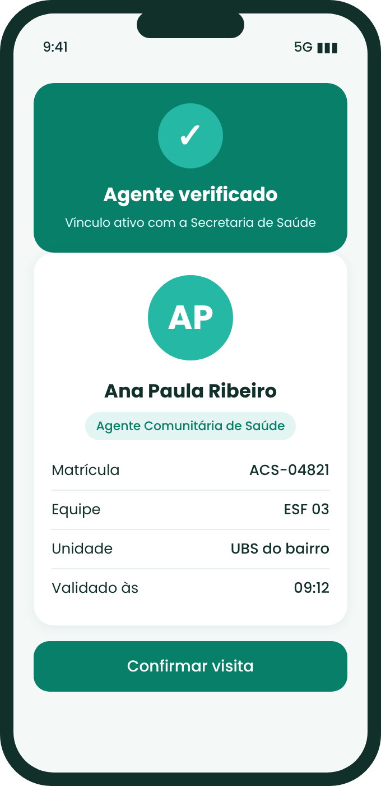

Validação do ACS
O morador escaneia o QR Code do crachá ou digita a matrícula. Em segundos, o app mostra foto, nome, equipe e vínculo do agente com a prefeitura.
- Responde aos 78,4% que pediram essa verificação.
- Protege a comunidade contra golpes de falsos agentes.